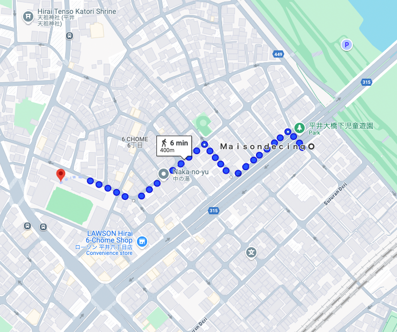

EMERGENCY
緊急時
紧急情况
비상 시
Urgence
Emergencia
If you have any problems, please contact us by message on the reservation site.
In case of emergency, please call the phone number below.
お困りの際は、予約サイトのメッセージまでご連絡ください。
緊急時は以下の電話番号にお電話ください。
如有问题，请通过预订网站的消息与我们联系。
紧急情况下，请拨打以下电话号码。
문제가 있으시면 예약 사이트의 메시지로 연락해 주세요.
비상 시에는 아래 전화번호로 연락해 주세요.
En cas de souci, contactez‑nous via le message sur le site de réservation.
En cas d’urgence, appelez le numéro ci‑dessous.
Si tienes algún problema, contáctanos por mensaje en el sitio de reserva.
En caso de emergencia, llama al número de abajo.
050-5810-2161
Property address (please provide this over the phone):
物件の住所（お電話口でお伝えください）：
物业地址（请在通话中告知）：
숙소 주소(통화 중에 알려 주세요):
Adresse du logement (à indiquer au téléphone) :
Dirección del alojamiento (indícala por teléfono):
5-chōme-58-2 Hirai, Edogawa City, Tokyo 132-0035
〒132-0035 東京都江戸川区平井５丁目５８−２
Emergency Call
緊急通報
紧急电话
긴급 전화
Appels d’urgence
Llamadas de emergencia
Police 110
警察 110
警察 110
경찰 110
Police 110
Policía 110
Fire 119
消防署 119
消防 119
소방 119
Pompiers 119
Bomberos 119
Rescue 119
救急車 119
急救 119
구급 119
Secours 119
Emergencias médicas 119
Multi‑language hospital search
多言語対応病院検索
多语言医院查询
다국어 병원 검색
Recherche d’hôpitaux multilingues
Búsqueda de hospitales multilingües
https://www.jnto.go.jp/emergency/eng/mi_guide.html
EVACUATION SITE
避難場所
避难场所
대피 장소
Lieu d’évacuation
Punto de evacuación
In case of danger, please proceed to the designated evacuation site for safety.
地震や台風などによって、水害や土砂災害などの災害が発生するおそれがあるときは指定された避難場所へ安全に避難して下さい。
如遇危险，请前往指定的避难场所确保安全。
위험 시 지정된 대피 장소로 안전하게 이동해 주세요.
En cas de danger, rendez‑vous au site d’évacuation désigné.
En caso de peligro, dirígete al punto de evacuación designado.
Edogawa City Hirai Elementary School
6-chōme-35-1 Hirai, Edogawa City, Tokyo 132-0035
江戸川区立平井小学校
〒132-0035 東京都江戸川区平井６丁目３５−１
